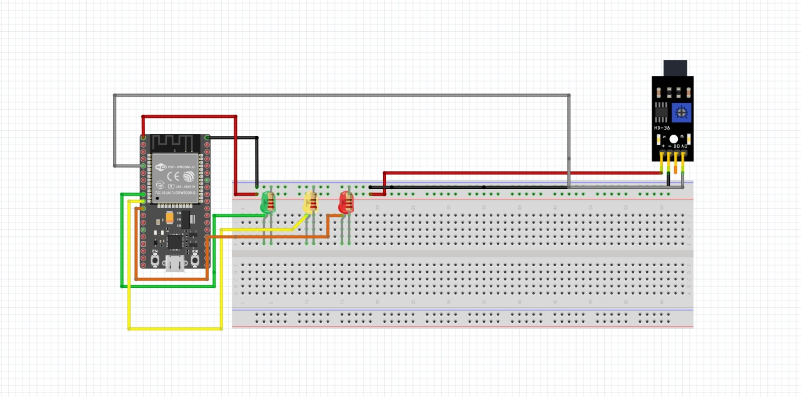
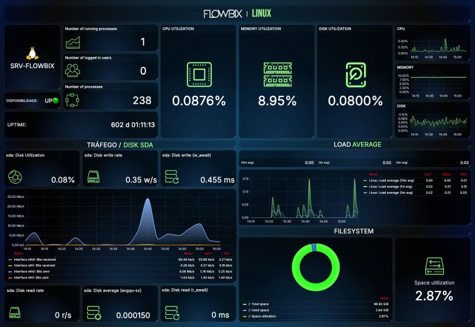

Como Funciona a Solução
O sistema HydroSense combina medição de fluxo por balanço hídrico com monitoramento de pressão piezoresistiva e cabos sensores de inundação ao longo das calhas da fábrica.
Quando ocorre um rompimento ou queda anômala de pressão, o nó sensor transmite um pacote de prioridade via MQTT (Message Queuing Telemetry Transport) para o Gateway Central, que ordena o fechamento da válvula solenóide em menos de 2 segundos.

Especificações Técnicas de Hardware e Rede
Componentes industriais selecionados para alta confiabilidade
| Componente / Camada | Tecnologia Utilizada | Função no Sistema |
|---|---|---|
| Sensores de Vazão | YF-S201 / Eletromagnético Industrial | Mede a vazão da água (L/min) na entrada e saída dos setores. |
| Sensores de Pressão | Transdutor Piezoresistivo 0-10 Bar | Monitora a estabilidade da pressão na rede hidráulica. |
| Atuadores | Válvula Solenóide / Relé Industrial | Executa o bloqueio automático do fluxo ao detectar vazamento. |
| Microcontrolador / Gateway | ESP32 / Módulo PLC IIoT | Processa sinais locais e gerencia a transmissão de dados. |
| Protocolo de Aplicação | MQTT (Message Queuing Telemetry Transport) | Comunicação leve e em tempo real no formato JSON. |
| Conectividade sem Fio | LoRaWAN / Wi-Fi Industrial / Modbus RS485 | Garante longo alcance e imunidade a ruídos industriais. |

Dashboard de Gestão & Alertas
Nossa plataforma visualiza instantaneamente o status das tubulações, consumo por hora, índice de perdas e localização exata de qualquer inconformidade na planta.
Integração com sistemas de alarme fabris e envio automático de alertas via Telegram, e-mail e SMS para as equipes de manutenção preventiva.